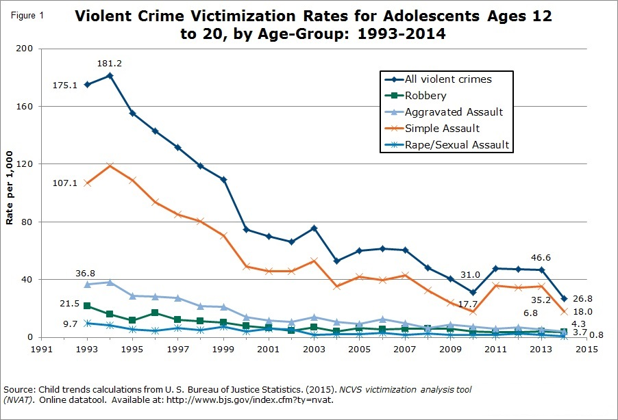

Median Victim & Perpetrator Age (1994-2014)
Crime Fact: Age Matters
Crime Data in US
Crime in Percentages
Crime By Weapon
Crime By Race
Most Dangerous Cites
Victim Perpetrator Age
Crimes Solved
What has caused the median age of both perpetrators and victim to increase?
Interesting statistics on adolscent victims
